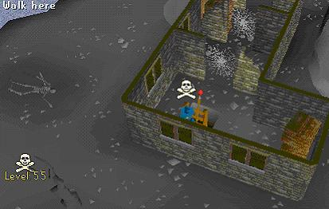
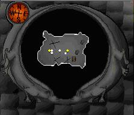
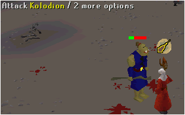
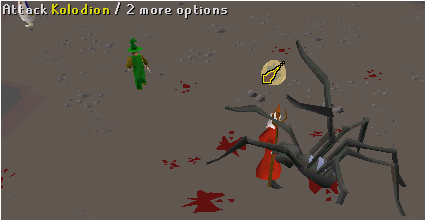
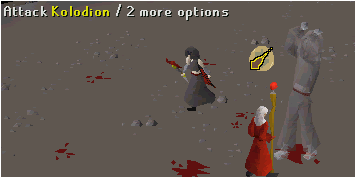
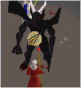
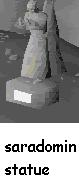
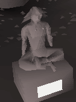
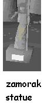
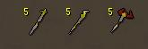

Mage Arena
Description: This quest allows you to learn three new magic spells and get three new staves.Difficulty: Hard
Length: Short
Items & Skills Needed:
- 60 Magic
- Runes to fight Kolodion
Recommended:
- 55 Combat level
Reward: A God Cape of your choice, the ability to purchase the God Staves, the ability to unlock the god spells (after casting them 100 times in the arena)
Instructions:
Note: If you die, then you do not have to start all over again, you just restart the last monster you faced, and there is no chance of being pk'd in the arena when fighting Kolodion because it is Non Multi-combatYou can teleport to the high level Members-only Wilderness using the teleport lever located west of the palace in Ardougne.
Go north, cut the web and go west towards the arena. Enter the building north of the arena, cut the two webs and pull the lever.

It's a safe house down there and other players may not attack you. Down there is a Bank and a Rune Shop. The guy who sells runes is named Lundail, and the banker's name is Gundai.

The 3 "x" points show where the 3 guys are.
Now talk to Kolodion, the Mage Arena guide.
After a lot of talking, Kolodion will teleport you into the Mage Arena. Remember you must have Level 60 magic or Kolodion won't talk to you.
Remember that you can use Protection from Magic, but your Attack and Stregth go to zero so only magic can be used .You will have to defeat Kolodion the Mage - a few Fire Blasts will do; one Ogre - regular level; one Giant Spider - probably the biggest you'll ever see; and one Black Demon. They are all easy enemies. Something good is that you can use Magic Protection and the final Demon (level 113) is way easy, but be warned you will be hit for 19 when you're teleported back. If you die while trying to do it you will have to start all over again.
Here some of the monster images for Kolodion.




Talk to Kolodion again and step into the pool. Talk to the Staff Seller and now choose the staff you want to use - do not buy it. You need to pray at a God statue - through the tunnel.
| Saradomin | Guthix | Zamorak |
|---|---|---|
 |
 |
 |
After you have chosen, pray at the God you want for a God Cape. It will appear on the ground beside you. Zamorak is black with red trim, Saradomin is blue with yellowish trim, Guthix is dark green with lighter green trim.
After you've gotten your cape, talk again to the Staff Seller, he will reward you with the staff of the God that matches your cape. Remember that you can use the 3 God staffs if you want, but to get another staff just buy a staff for 80k. If you want a different cape, pray at a different statue. (Note: you can only have one God cape at a time, the Runescape gods are jealous gods!)
Before quitting, ask Kolodion how you can use your staff outside the Mage Arena. Kolodion will tell you that you must cast your God spell (the spell of the God you chose) 100 times, inside of the arena to charge the staff. Then after it's charged you can use the staff anywhere.
Before going outside take some Blood runes and go inside the Arena and use it a 100 times just to learn the spell. Remember that the God you follow will not attack you inside the Arena as long as you have the staff and cape of the god equipped. The 2 others you are not following will attack you and hit damage up to 20 (Depending on your stats). Also be very aware that YOU CAN BE PK'D (killed by other players) inside the Arena while practicing your spell!
It took me less than 50 Death runes to kill all the monsters, and I used about 7 Lobsters.
Which staff to take:
Zamorak Staff: Hits harder than the other staffs and it reduces Magic.
Guthix Staff: Hits good and reduces Defence.
Saradomin Staff: Hits good and reduces Prayer.

The 3 God Staffs each cost 80k at the shop
Remember that it's a Members-Only "mini" quest and thus you won't receive any Quest Points for it.
I hope this guide has helped you.
Congratulations, Miniquest Complete!
This Mini-Quest guide was written by allerchiez, pirate bob 49, super dude, lascerator, and trekkie. Thanks to DRAVAN, gkef, Obi-Wan, bonzi buddy3, Kuramawhip, Imperial G96, Kang227, iamanarab, Alrikthemad, Wicked baron, and lewt04 for corrections.
This Mini-Quest guide was entered into the RuneHQ.com database on Wed, Jun 09, 2004, at 12:25:43 PM by DRAVAN and CJH and was last updated on Sun, Nov 13, 2005, at 03:31:57 AM by Fireball0236.